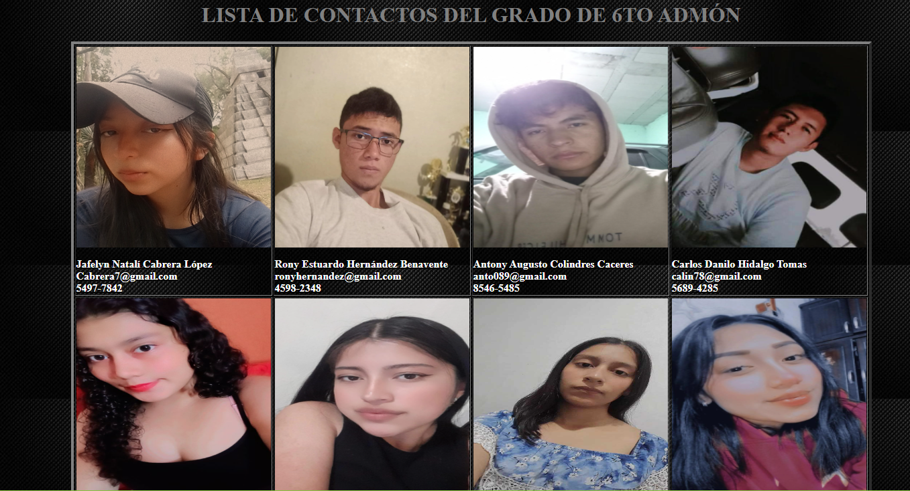
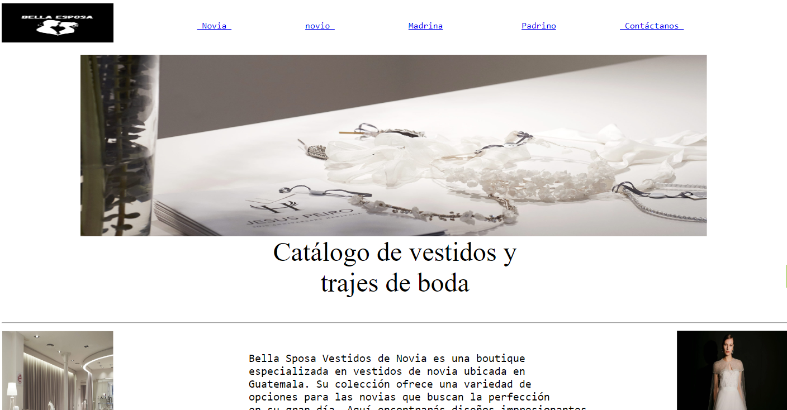
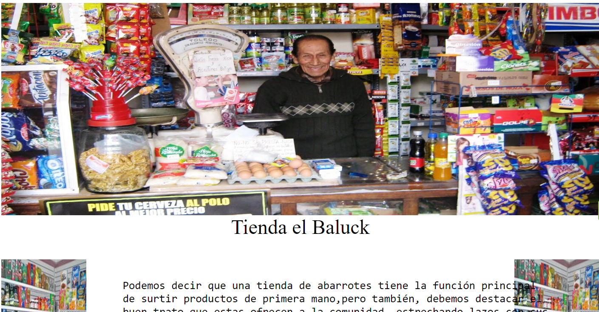
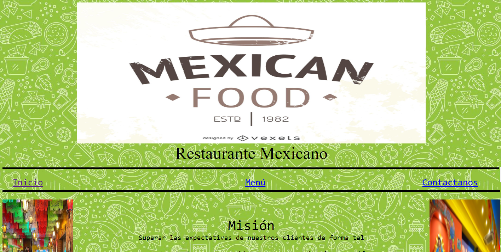

Inicio Proyectos Ejercicios Contacto
Proyectos
Haga click en la imágen que desee ver
| Representación del proyecto | Descripción |
|---|---|
|  | Se realizo una lista de contactos de los alumnos del grado de 6to administración de empresas, en el colegio IPC. En el grado son 22 alumnos, 7 hombres y 15 mujeres, de edades entre 17 y 20 años, todos que distintas carácteristicas y diferentes personalidades. |
Portafolio Personal, primer portafolio que realicé, con el cual me guie para realizar esté. Fue uno de los primeros trabajos que realizamos en el curso de computación, con un valor de 10 puntos y una firma importante para el curso. |
|  | Proyecto Boda, realizamos una página web dedicada al comercio de trajes de boda, donde colocamos vestidos de boda, trajes de boda, trajes para padrinos y vestidos para madrinas. Con una finalidad de llamar la atención del público objetivo de ese mercado. |
|  | Tienda el Baluck fue pensada o creada por la figura pública de un vendedor en una tienda de abarroteria muy conocida aquí en Villa Nueva, la cual le decidimos realizar una página web para que el pudiera vender sus productos por medio del internet también. |
|  | Realizamos una página web o un sitio web a el restaurante Mexican Food, donde colocamos su historia, su misión y visión, Sus datos y su menú. Dando un buen resultado ya que ah llegado a muchas personas y ahora tienen mas clientes. |